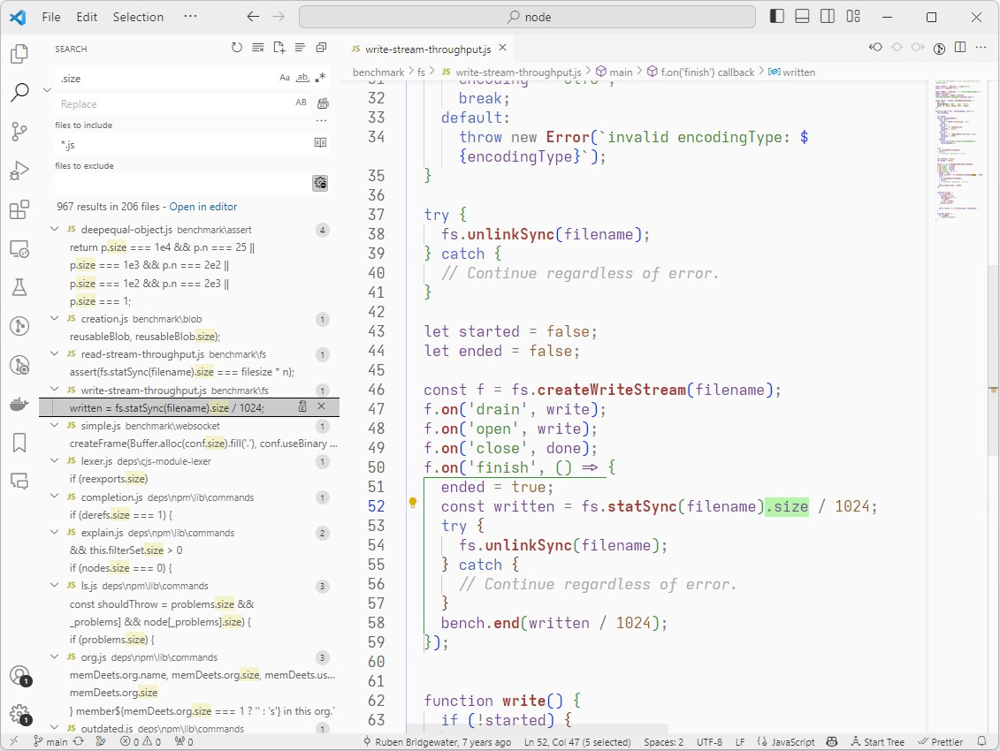

Saturday Light

Saturday Light is a low contrast light theme for VS Code. I use it at work, where our office lights are strong and I sit by a window. Ian Beck's Quiet Light was pretty much what I wanted, this builds on that. The theme is named after the Boards of Canada song "Hey Saturday Sun".